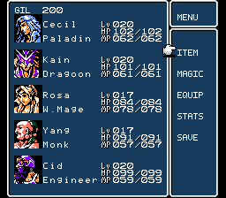
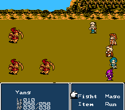
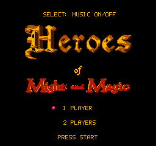
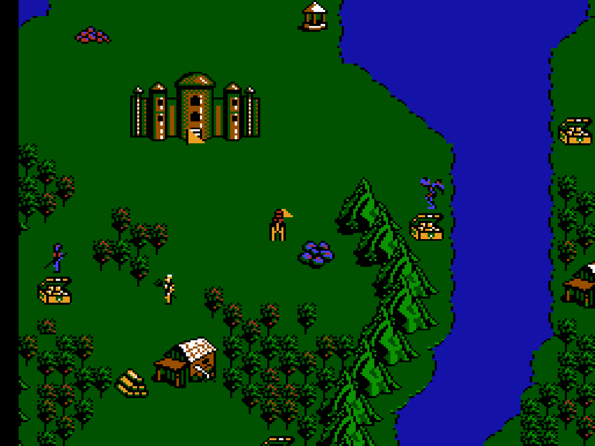
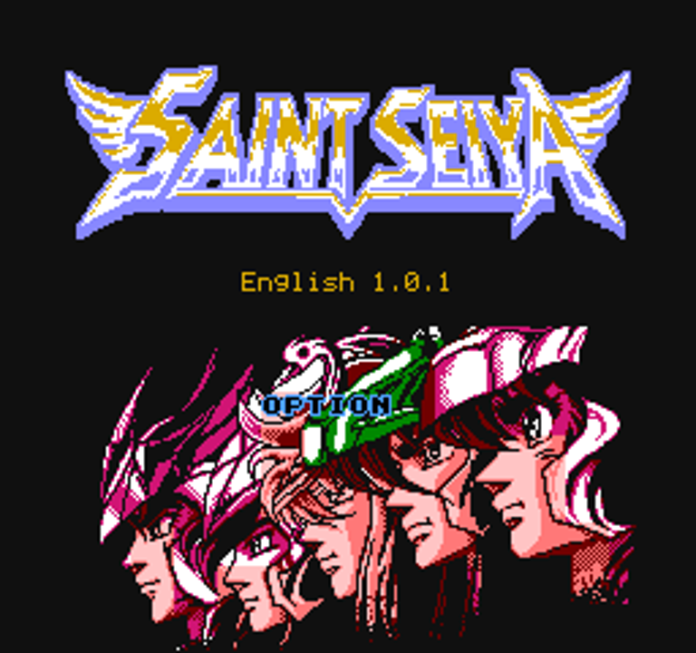
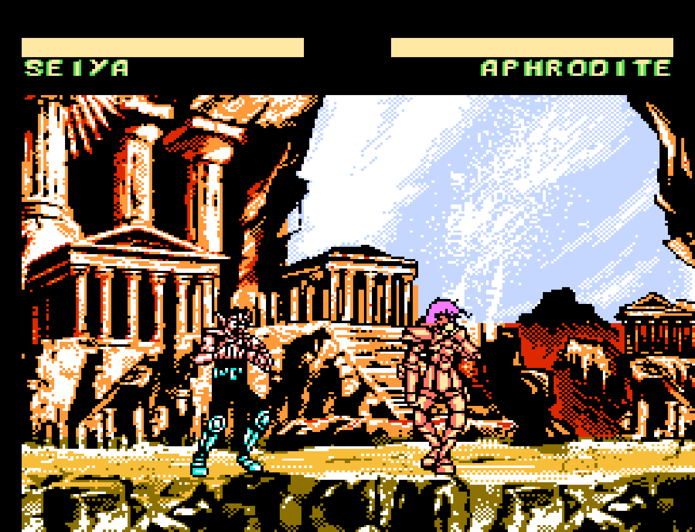

Famicom / NES · Trilogy English Beta 1.1.2
Final Fantasy IV
The three Chinese cartridges known as Final Fantasy X1: Dark Chapter, X2: Light Chapter, and X3: Final Chapter adapt Square’s Final Fantasy IV for Famicom hardware. They were published by Henggedianzi; the precise developer attribution and original release year remain uncertain.
BootlegGames Wiki: X1–X3 listing and context (the trilogy is listed under related games).

Party menu in the Final Chapter
Yang choosing a battle command in the Dark ChapterWhat the patch changes
The patch translates the Chinese game into English and combines its three ROMs into a single multicart. Choose a chapter from the title menu. Each chapter has its own save.
View changelog
Beta 1.1.2
- Equipment applies its attack, defense and speed bonuses. The Deathbringer gift at Fabul and the Tent and Hunt.Claw rewards at the waterfall now give the intended items.
- Fixed Tent use and chest pickups when inventory is full. Items queued in battle are refunded if the turn ends before they are used.
- Repaired dungeon and battle escapes with EmergExit and Teleport, and corrected Run behavior in battle. Dungeon escapes now clear the menu graphics as the field returns.
- Fixed scenery at the Fabul inn and a repeat fight and reward at Mist.
- Battle lists show surviving enemies and their counts. Lodestone warnings and escape descriptions are clearer, and GIL, level-up and spell awards have corrected spacing.
Beta 1.1.1
- Shortened Soldier and Marine labels to fit the battle panel and added a space before the EXP amount.
Beta 1.1
- First public release. Combined the three English chapters with separate saves, revised dialogue, shortened location labels and an eight-digit GIL display.
Assemble the patched ROM
- Supply all three original Chinese ROMs below, extracted from their archives with their headers intact.
- Download and extract the patch kit. Install Python 3 if needed.
- Put all three original ROMs in the extracted patch-kit folder, alongside the patch scripts. Run the command below for your platform. Replace "X1.nes", "X2.nes" and "X3.nes" with your actual filenames, keeping the quotation marks and chapter order. The last filename, "FFIV-Beta-1.1.2.nes", names the finished ROM; it must not already exist in this folder.
- The script checks each source, assembles their data, applies the included IPS, and verifies the finished ROM. Open the result with FCEUmm (the RetroArch core), which was used for testing, or another emulator supporting NES 2.0 mapper 342.
Download Beta 1.1.2 patch kitLast updated: · Beta 1.1.2
Windows
Open the patch-kit folder in File Explorer. Click its address bar, type powershell, and press Enter. Paste the command below into the window and press Enter.
.\patch-windows.cmd "X1.nes" "X2.nes" "X3.nes" "FFIV-Beta-1.1.2.nes"
macOS / Linux
Open a terminal in the patch-kit folder, then run the command below. On macOS, you can open Terminal, type cd followed by a space, drag the folder into the Terminal window, and press Enter to select that folder.
sh patch-macos-linux.sh "X1.nes" "X2.nes" "X3.nes" "FFIV-Beta-1.1.2.nes"
Run the command as shown; double-clicking the launcher alone does not supply the filenames it needs.
The IPS targets the script’s assembled intermediate, not any one of the source ROMs. All work happens locally. Originals are preserved and existing output files are refused.
Final Fantasy X1 (Ch)[!].nes
1,048,592 bytes · SHA-256
ffc36fcc05bab705dd52d630b4192d509583203a5acd635468b72f520d642820
Final Fantasy X2 (Ch)[!].nes
1,048,592 bytes · SHA-256
a85d6c5b9dc0822b846de2e81e793bd1e4930e15a21ee1efeef1f85e72dba01b
Final Fantasy X3 (Ch)[!].nes
1,048,592 bytes · SHA-256
fef339d96cf099b687f6f7e403c13136dd22c6cf4d8da2edc99bafae78ca6982
Patched output SHA-256
16266e0d38d83fdb49fd674de01879b9b8d75a3519ab492d9544dcfad07c1862
English instruction manual
This 25-page English manual covers chapter selection, saving, controls and walkthroughs for all three chapters. The cover keeps the original advertising's curious choice to promote Final Fantasy IV with Zack Fair, the hero of Crisis Core: Final Fantasy VII.
Download the FFIV manual (PDF)Last updated: · Manual revision 3: Beta 1.1 screenshots
Original Chinese manual photographs — Sanook photo article
Credits
Original Final Fantasy IV: Square. Original NES trilogy publisher: Henggedianzi; developer attribution remains uncertain. English adaptation, revisions and combined release: P3 with ChatGPT. English menus and graphics fixes by Lugia2009. See the Final Fantasy IV Famicom Trilogy patch on ROMhacking.net. Lodestone Cavern softlock fix 0.12: clymax. Manual assembled with ChatGPT from surviving Chinese manual photographs and English gameplay captures.
Famicom / NES · HoMM English 1.6.1
Heroes of Might and Magic
Mo Fa Men Zhi Ying Xiong Wu Di, also known as M&M Heroes, is Waixing’s 1998 Famicom adaptation of the original PC Heroes of Might and Magic. It brings the fantasy strategy game to NES hardware with simplified graphics and six standalone scenarios.
Read the BootlegGames Wiki entry

HoMM English title screen
Exploring the world map — captured in RetroArchWhat the patch changes
English text, a Heroes title logo, clearer menus, layout and palette repairs, and fixes to spell cancellation, refunds and damage calculations. Builds on the Russian v1.10 fixes and includes lancuster’s eight NES arrangements of Heroes II Game Boy Color music, selected sound effects, and a working title-screen music switch.
Assemble the patched ROM
- Extract your own source ROM and match its SHA-256 to one of the two options below. Hash the uncompressed ROM including its NES header.
- Download the patch matching that source. Apply exactly one IPS; these are alternative routes to the same release.
- Save as HoMM English v1.6.1.nes, verify the output hash, and open it in an emulator supporting mapper 4 / MMC3.
Chinese original
Required source SHA-256
ae85da6a6605b57ae21ba60ff634484c5825293486717d4cb385e9b99baa1e99
Download Chinese original IPSLast updated: (patch package)
Russian v1.10
Required source SHA-256
4736cd65ea3cb22259df9e6aa37c69e476238bd4f7d429aa5928cac4f5445794
Download Russian v1.10 IPSLast updated: (patch package)
Patched output SHA-256
43ce5b655a0334dca073d81672d53ac5a8af85f107854e49c2dafbb60526cf51
Boot the new ROM afresh; old emulator save states can restore outdated code. Keep a backup of your battery save and copy it to the new ROM’s matching basename if needed.
Credits
Original game: Fuzhou Waixing Computer Science & Technology. ROM hack contributors: Guyver, FedX IV, Sharpnull, lancuster, and P3. English work by P3 with ChatGPT. Replacement music arrangements and selected sound effects: lancuster (Emu-Land user safronoff), drawing on Heroes of Might and Magic II for Game Boy Color. Original NSF metadata credits Kai Mu, Han Li, and lancuster.
Famicom / NES · English 1.0.1
Saint Seiya
Originally titled Os Cavaleiros do Zodíaco, this original Saint Seiya fighting game was developed by Hummer Team and published with sampled voices by Rinco / Ramar International in late 1997. Its story draws on the film Saint Seiya: Legend of Crimson Youth, and it appeared on Rinco’s Talkman system.
Read the BootlegGames Wiki entry

English title screen
Seiya versus Aphrodite — captured in RetroArchWhat the patch changes
English story adaptation, voices and narration; corrected names and text layout; crash repairs; and optional Fair Hard difficulty with revised CPU reactions and balance. Original difficulty remains available. This is an English adaptation, not a verified line-by-line Arabic translation.
Assemble the patched ROM
- Extract your own Rinco Talkman 3-in-1 (Asia) (Ar) (Pirate).nes (4,194,320 bytes). Keep its 16-byte NES header.
- Check the source SHA-256 below, then apply the IPS once to a copy of that file.
- Save as Saint Seiya English 1.0.1.nes and verify the output SHA-256. Tested with RetroArch’s FCEUmm core.
Download Saint Seiya IPSLast updated: (patch package)
Required source SHA-256
e89c7ebd5cf37c2522d4ee7fa8717ceea1c5f1f4e6aed04e20e3bef73a3ec9d0
Patched output SHA-256
bc661540e31268df46d324bc7df063dd2234ba491234d414210b40bbbe06e4be
Credits
Original game: Hummer Team. Original publishing and sampled voices: Rinco / Ramar International. English adaptation and balance revision: P3, with ChatGPT and ElevenLabs tools.
How to patch
Download dates describe package revisions. Compare the version and expected output SHA-256 to decide whether your ROM needs an upgrade; a newer page or manual does not necessarily mean a changed ROM.
Use an IPS-compatible patcher on Windows, macOS, or Linux. Select your matching original ROM as the source and the downloaded IPS as the patch, then save a new output file. Saint Seiya and Heroes each use one IPS patch. Final Fantasy IV requires the three-source assembly kit described above.
Check SHA-256 on the extracted ROM, not its ZIP archive. Replace game.nes with your file’s path:
Windows PowerShell
Get-FileHash -Algorithm SHA256 "game.nes"
macOS Terminal
shasum -a 256 "game.nes"
Linux Terminal
sha256sum "game.nes"
If the source hash differs, stop and identify the correct dump. After applying the patch, repeat the check on the output and compare with the game’s expected hash.